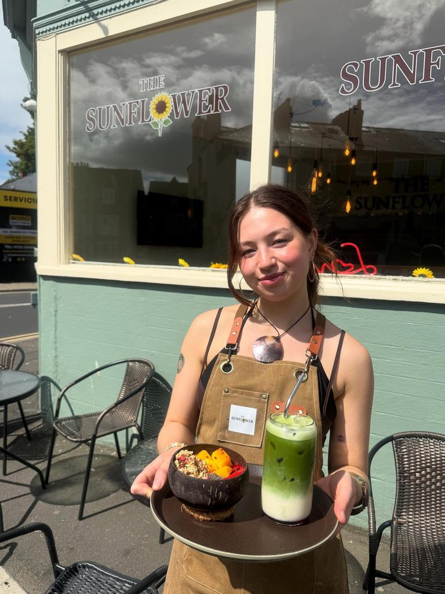
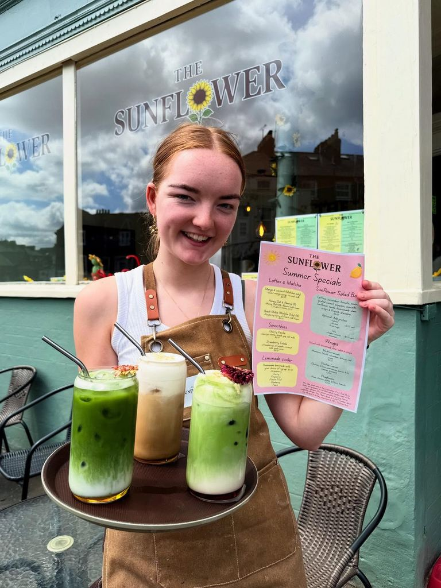

Our Story
Big heart,
tiny space
We opened Sunflower Cafe in September 2025 because we believe every neighbourhood deserves a proper little cafe. Somewhere to pause, breathe, and feel at home.
Our space is small — just a handful of tables — but that is the point. It means we remember your name, your order, and how you like your coffee. It means the cakes are baked here, not shipped in. It means when you walk through the door, you are not a customer — you are a neighbour.
Named for the sunflowers that brighten even the greyest Yorkshire morning, we aim to do the same on Victoria Road.